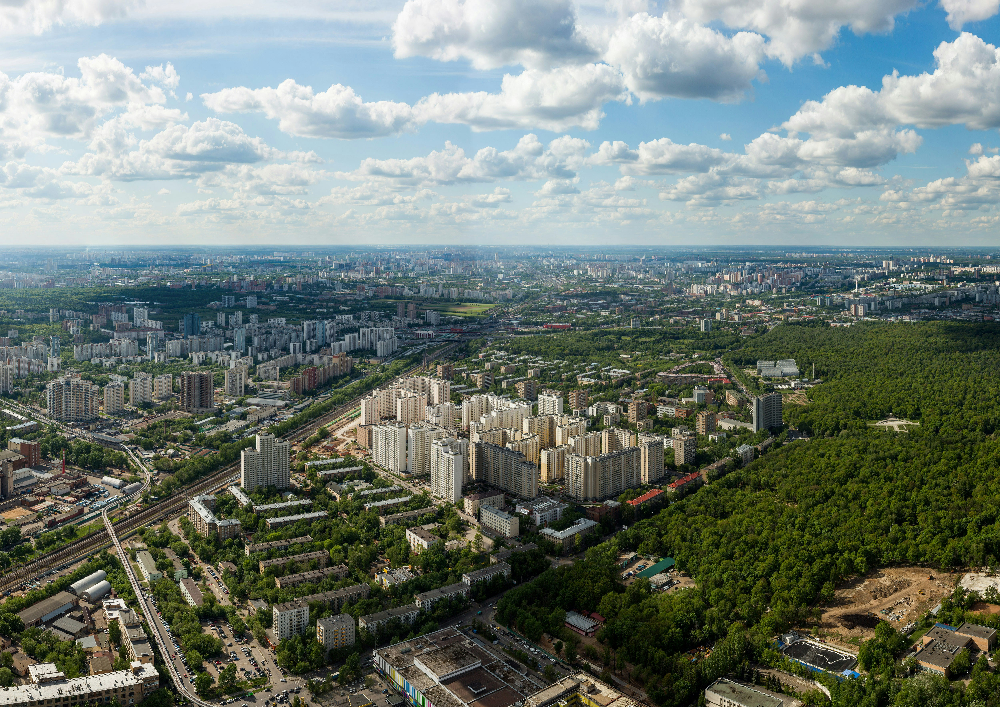
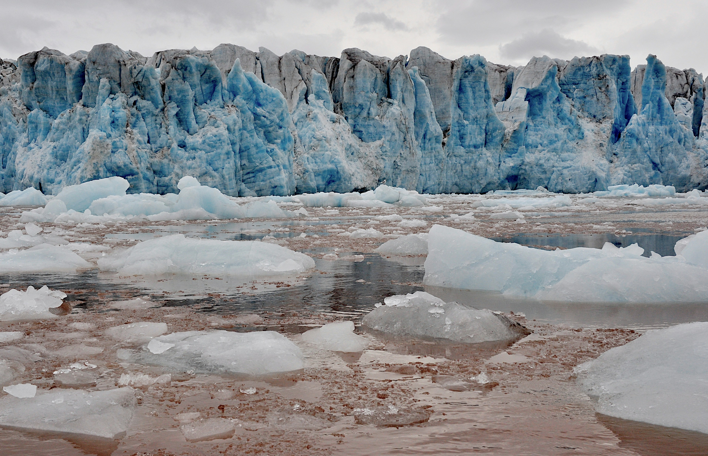
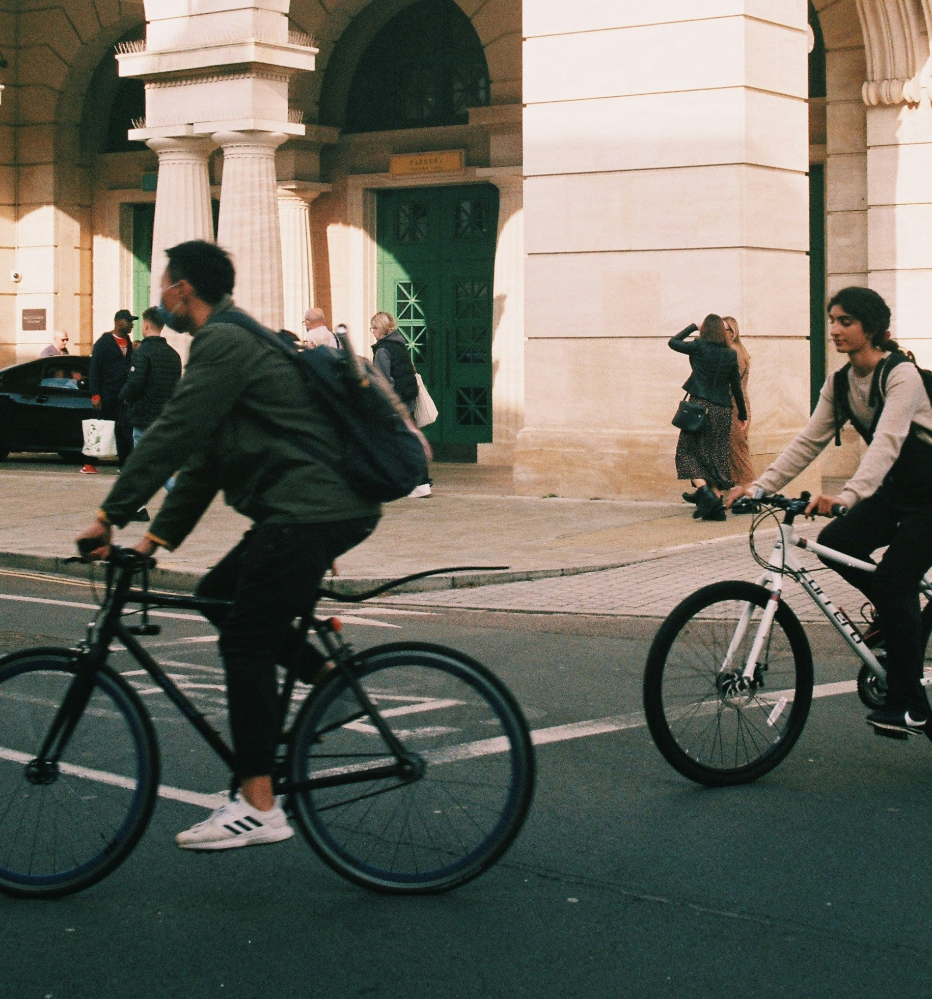
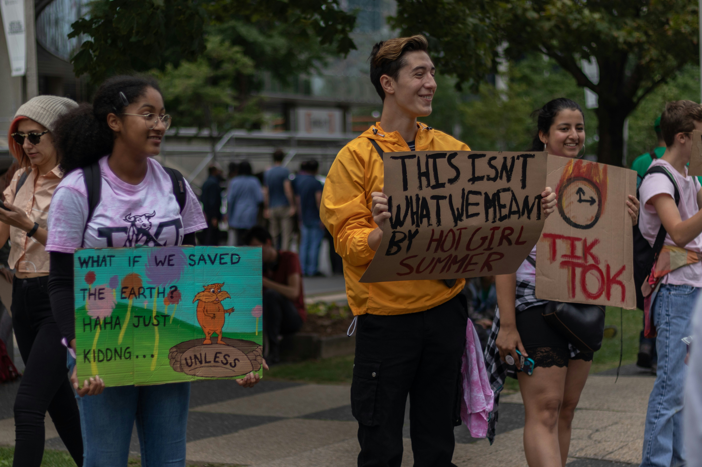

Climate Action — What Can We Actually Do?
Climate change is something we hear about constantly, but it can feel overwhelming and hard to know where to start. SDG 13 is all about taking real steps to deal with climate change — not just talking about it. It's about reducing emissions, making smarter choices, and encouraging others around us to do the same.
The good news is that climate action doesn't have to mean big, expensive lifestyle changes. A lot of it comes down to small habits that add up over time, especially when more people start doing them together.

Why It Matters
The Earth's temperature has already risen by over 1 degree compared to pre-industrial times. That might not sound like a lot, but it has caused more extreme weather, rising sea levels, and serious damage to ecosystems around the world. If nothing changes, things will get significantly worse.
For students, this matters because it's our future that is most at risk. The decisions made now — by governments, businesses, and individuals — will shape what the world looks like in 20 or 30 years. That's why it's important to act now rather than wait for someone else to fix it.

What Students Can Do
You don't need to be a scientist or a politician to make a difference. There are plenty of things students can do right now that genuinely help:
- Walk, cycle or use public transport instead of getting lifts everywhere
- Cut down on meat and dairy — even just a few days a week makes a difference
- Stop buying fast fashion and try second-hand or charity shops instead
- Turn off lights, unplug chargers and avoid leaving devices on standby
- Talk to friends and family about climate change — awareness really does spread
- Get involved with student sustainability groups at university
These might seem small on their own, but when thousands of students make the same changes it starts to add up. It also sends a signal to companies and governments that people actually care.

Real Life Examples
There are already loads of great examples of people taking climate action around the world. In London, the Ultra Low Emission Zone has pushed people away from polluting vehicles and improved air quality across the city. Universities like the University of Edinburgh have committed to becoming carbon neutral, showing that institutions can lead by example too.
On a smaller scale, student-led groups have successfully pushed their universities to switch to renewable energy, improve recycling facilities, and reduce single-use plastic on campus. These changes started because students spoke up and got organised — which is exactly the kind of action SDG 13 is calling for.

Useful Resources
If you want to learn more or get involved, here are some good places to start:
- UN Climate Change — Official information on global efforts
- The Carbon Trust — Practical advice on reducing emissions
- Sustainability Exchange — Resources for students and universities
Getting informed is the first step. The more you understand about climate change, the easier it becomes to spot where you can make a real difference in your own life.